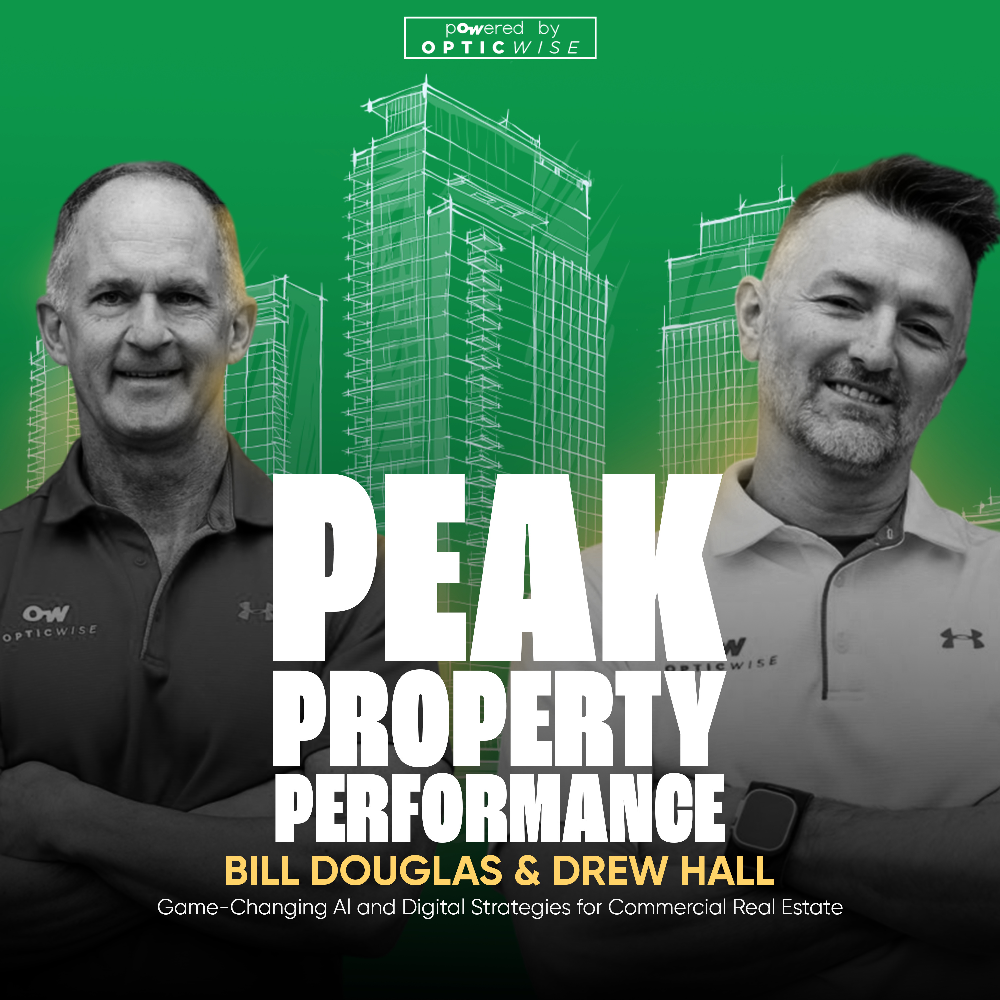

<p>Welcome to the first episode of the Peak Property Performance Podcast, where innovation meets commercial real estate! Kicking off this journey, host Lane Taylor sits down with the show’s official co-hosts, Bill Douglas and Drew Hall, leaders behind Optic Wise and authors of the Peak Property Performance book. This debut episode pulls back the curtain on why Bill and Drew launched the show, revealing how their collective expertise is reshaping the commercial real estate landscape with cutting-edge insights into AI, data, and digital infrastructure.</p><p>Listeners will hear personal stories from both Drew and Bill, how their unique paths led them to champion smarter, tech-driven property strategies. You’ll get a firsthand look at their mission: empowering property owners to reduce costs, increase NOI, and truly future-proof their assets. Through candid discussion, the hosts share their commitment to making actionable business intelligence accessible, not just for big industry players but for anyone eager to elevate their property game.</p><p>In this episode, expect an inside scoop on how the team approaches client challenges, their biggest “aha!” moments, and why controlling your data and digital backbone is the new must-have for property success. Whether you’re looking to boost occupancy, optimize expenses, or simply get inspired to dig deeper into your property’s potential, you’re in the right place.</p><p>Hit subscribe and get ready - Peak Property Performance is here to help you unlock real estate results, one episode at a time.</p><p><br></p>
← All Episodes
Beyond PropTech: Why Digital Infrastructure and Data Control Matter for Your Buildings
Episode · 18 min
